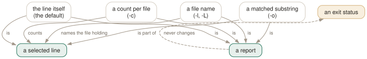

Day 05
Not printing the line
Counts, names, fragments, silence — and why none of them change the exit status.
By the end of today you can
- pick between
-c,-land-o | wc -lfor the number you actually want - explain why
if grep -L pat *.ctakes the branch you did not intend - use
-qand-mto stop grep early on input you cannot afford to read twice
Same lines, different report
Nothing on this page changes which lines match. Every option here changes only what grep prints about the lines that already matched — a count instead of the line, a filename instead of the line, a fragment instead of the line, or nothing at all.
Keeping that separation clear is what stops the classic mistakes. -c does not count matches, it counts selected lines. -o does not change the selection, it slices up what gets printed. And none of them touches the exit status, which is where the sharpest trap on this page lives.

-L can print a screen full of filenames and exit 1.Counting the thing you meant to count
$ echo 'a1 b22 c333' | grep -cE '[0-9]'
1
$ echo 'a1 b22 c333' | grep -oE '[0-9]' | wc -l
6
One selected line; six matching digits. -c answers the first question and there is no flag for the second — -o | wc -l is the idiom, and it is worth learning as a unit.
Two smaller facts about -o: matches are non-overlapping, so aaaa yields two aa and not three; and empty matches are discarded, so grep -o 'x*' prints nothing while still reporting success, because the line did match — the match was just zero characters wide.
Filenames, and the exit status that lies about them
-l prints the name of each file that had a match; -L prints the name of each file that did not. -l is also the fastest question you can ask grep, because it abandons each file at the first match rather than reading to the end.
$ grep -L beta c1.txt c2.txt
c2.txt
$ echo $?
0
$ grep -L zzz c1.txt c2.txt
c1.txt
c2.txt
$ echo $?
1
Stopping early: -q and -m
-q- Print nothing and exit
0the instant a line is selected. This is grep-as-predicate, and it is strictly better thangrep ... > /dev/nullbecause it stops reading. Remember from Day 1 that it exits 0 even if an error also occurred. -m NUM- Stop after NUM selected lines.
-m0exits immediately without reading anything. With-c, the count never exceeds NUM. With-v, it counts NUM non-matching lines.
Colour, and the typo that eats your output
--color takes never, always or auto. auto means “only when standard output is a terminal”, which is why your interactive greps are coloured and the same command in a pipeline is not. Use always when you deliberately want the escape sequences to survive a pipe into less -R.
The colours themselves come from GREP_COLORS, a colon-separated list of SGR capabilities that defaults to ms=01;31:mc=01;31:sl=:cx=:fn=35:ln=32:bn=32:se=36 — bold red for the match, magenta for filenames, green for line numbers and byte offsets, cyan for the separators. Setting mt changes both ms and mc at once, which is the only one most people ever want.
$ GREP_COLORS='mt=01;33' grep --color=always ERROR app.log | less -R
The full capability list runs to about seventy lines of the manual page and is a lookup table rather than a concept; this course does not reproduce it. man grep under GREP_COLORS is the reference, and the SGR numbers themselves belong to your terminal, not to grep.
Today's habit
Before you run a grep, decide which of the five reports you want — the line, a count, a filename, a fragment, or just the answer yes-or-no — and ask for that one. Most slow, noisy greps are someone printing lines and reading them with their eyes when they wanted -l.
# ~/grep-recipes.sh
#
# Day 5: count OCCURRENCES, not lines. -c cannot do this.
grep -o PATTERN file | wc -l
# Day 5: which files mention this symbol? Fastest question grep answers -
# -l abandons each file at the first hit.
grep -rl SYMBOL .
# Day 5: -L's status is the OPPOSITE of its output. Test the output.
[ -n "$(grep -L 'SPDX-License' src/*.c)" ] && echo 'missing headers'
New vocabulary
Options
| Option | Does |
|---|---|
-c, --count | Print the number of selected lines per file, not the number of matches. |
-l, --files-with-matches | Print each filename that had a match, and stop reading that file at the first one. |
-L, --files-without-match | Print each filename that had none. Read the gotcha about its exit status. |
-o, --only-matching | Print each matched substring on its own line. Non-overlapping, empty matches dropped. |
-q, --quiet, --silent | Print nothing; exit 0 on the first match. The right way to use grep as a test. |
-m NUM, --max-count=NUM | Stop after NUM selected lines. -m0 reads nothing at all. |
-s, --no-messages | Suppress error messages about unreadable files. Does not change the exit status. |
--color[=WHEN] | WHEN is never, always or auto. Nothing else, and abbreviations are refused. |
GREP_COLORS | Colon-separated SGR capabilities. Defaults to ms=01;31:mc=01;31:sl=:cx=:fn=35:ln=32:bn=32:se=36. |
Drillsdo these in a real terminal, today
Self-check
Answer out loud first, then unfold.
A CI check is supposed to fail when any source file is missing a licence header. It runs if grep -L 'SPDX-License' src/*.c; then echo 'missing headers'; exit 1; fi. Every file is missing the header, and the check passes. Why?
Because -L inverts the output but not the status. The exit status still answers “was any line selected anywhere?”. No file contained the string, so no line was selected, so grep exits 1 — while printing every filename. The if sees failure and skips the branch.
Worse, it is exactly backwards: when every file does have the header, -L prints nothing and exits 0, so the check fires. Test the output, not the status: if [ -n "$(grep -L 'SPDX-License' src/*.c)" ]; then ....
You want the number of times a word appears in a file, and grep -c word file gives a number that is too low. Adding -o does not help. What is going on?
-c counts selected lines, not matches. A line containing the word three times counts once. And combining the two does not compose: grep -oc gives you the -c behaviour, because -c suppresses normal output and -o only changes what normal output would have been.
The idiom is grep -o word file | wc -l. Be aware it counts non-overlapping matches — grep -o aa finds two in aaaa, not three — and that empty matches are dropped, so grep -o 'x*' prints nothing while still exiting 0.
The manual says that with -o, the -A, -B and -C options “have no effect and a warning is given”. You try it and see no warning. Who is wrong?
The manual. In GNU grep 3.12, grep -o -A2 pattern file prints the matched substrings, ignores the context request, and writes nothing at all to standard error — zero bytes. The same is true for -B and -C.
The page's own NOTES section admits it “is maintained only fitfully”, and this is one of the places that shows. The practical consequence is that a script asking for both gets silently less than it asked for, with no diagnostic and exit status 0. Treat -o and context as mutually exclusive and never write both.
Your script does grep -s pattern "$file" to keep quiet about files that may not exist, and it still behaves differently when the file is missing. But there is no error on screen.
-s suppresses the error message only. The exit status is still 2, and anything testing that status — an if, a &&, set -e — behaves exactly as it did before. You have hidden the evidence and kept the symptom.
If you genuinely want a missing file treated as “no match”, you have to say so: grep -s pattern "$file" || [ $? -eq 1 ] is unreadable but honest, and testing [ -f "$file" ] first is usually better. Day 9 puts this together properly.
Cheat sheet
-c count selected LINES per file (not matches - use -o | wc -l for those)
-l name each file that matched (stops reading it at the first hit)
-L name each file that did NOT (its EXIT STATUS is inverted - see below)
-o print each match on its own line (non-overlapping; empty matches dropped)
-q print nothing, exit 0 at the first match (grep as an if-condition)
-m N stop after N selected lines (-m0 reads nothing at all)
-s hide error MESSAGES only - the exit status is still 2
# these do not compose; they override, whatever order you write them in:
# -q > -l / -L > -c > -o (-l vs -L: the LAST one on the line wins)
# -L trap: prints nothing + exits 0 = every file matched
# prints everything + exits 1 = no file matched
# --color takes never|always|auto ONLY. A typo prints usage to STDOUT, exits 0.
Everything through Day 05
Commands
| Command | Does |
|---|---|
grep root /etc/passwd | Search one named file. No filename prefix on the output. |
grep root /etc/passwd /etc/group | Search several. Output gains a file: prefix automatically. |
grep root | No file operand: read standard input. From a terminal, this waits for you. |
grep -r root | No file operand and -r: search the working directory instead. |
cmd | grep root - | A file operand of - is standard input, mixable with real files. |
echo $? | Read the status grep just returned. The habit this whole day is about. |
grep -e -v file.txt | Search for the literal string -v. -e protects a pattern that starts with a dash. |
grep -f patterns.txt data.txt | Take patterns from a file, one per line. The workhorse for long lists. |
cut -f1 ids.csv | grep -f - data.txt | Patterns from a pipe. -f - reads them from standard input. |
Options
| Option | Does |
|---|---|
-V, --version | Print the version and exit. Know which grep you are actually running. |
--help | Print the option summary and exit. Shorter and better organised than the man page. |
-- | End of options. Everything after it is a pattern or a filename, never a flag. |
-i, --ignore-case | Match regardless of case. What counts as “the same letter” depends on the locale. |
--no-ignore-case | Cancel an earlier -i. The last of the two on the line wins. |
-v, --invert-match | Select the lines that did not match. Applied once, after all patterns. |
-w, --word-regexp | Require the matched substring to be bounded by non-word characters or line ends. |
-x, --line-regexp | Require the match to be the entire line. Silently overrides -w. |
-e PAT, --regexp=PAT | Add a pattern. Repeatable, and combinable with -f. |
-f FILE, --file=FILE | Add every line of FILE as a pattern. An empty file matches nothing at all. |
-y | Undocumented synonym for -i. In neither the man page nor --help, but 3.12 accepts it. |
. | Match any single character. Whether it matches an encoding error is unspecified. |
[abc] | Match one character from the list. |
[^abc] | Match one character not in the list. The ^ must come first. |
[a-d] | A range. In the C locale, ASCII order; elsewhere the standard says it is unspecified. |
[[:digit:]] | A named class. The outer brackets are yours, the inner ones are part of the name. |
^ and $ | Anchor to the start and end of a line. They match a position, not a character. |
\< and \> | Anchor to the start and end of a word. A GNU extension. |
\b and \B | Anchor at, and not at, a word edge. \b is either edge; \< is only the left. |
\w and \W | Shorthand for [_[:alnum:]] and [^_[:alnum:]]. Note the underscore. |
* | Zero or more of the preceding item. The only repetition operator BRE spells the same way. |
? and + | At most one, and at least one. In BRE you must write \? and \+. |
{n,m} | Between n and m times. {,m} with no lower bound is a GNU extension. |
| | Alternation, and the loosest-binding operator there is. BRE spells it \|. |
(...) | Group, to override precedence. BRE spells it \(...\). |
\1 … \9 | Re-match the exact text the nth group captured. Slow, and worth avoiding. |
-E, --extended-regexp | Extended syntax: the operators above are bare. What you usually want. |
-G, --basic-regexp | Basic syntax: ? + { | ( ) need backslashes. The default. |
-F, --fixed-strings | No regex at all. Every pattern is a literal string, and it is the fastest matcher. |
-c, --count | Print the number of selected lines per file, not the number of matches. |
-l, --files-with-matches | Print each filename that had a match, and stop reading that file at the first one. |
-L, --files-without-match | Print each filename that had none. Read the gotcha about its exit status. |
-o, --only-matching | Print each matched substring on its own line. Non-overlapping, empty matches dropped. |
-q, --quiet, --silent | Print nothing; exit 0 on the first match. The right way to use grep as a test. |
-m NUM, --max-count=NUM | Stop after NUM selected lines. -m0 reads nothing at all. |
-s, --no-messages | Suppress error messages about unreadable files. Does not change the exit status. |
--color[=WHEN] | WHEN is never, always or auto. Nothing else, and abbreviations are refused. |
GREP_COLORS | Colon-separated SGR capabilities. Defaults to ms=01;31:mc=01;31:sl=:cx=:fn=35:ln=32:bn=32:se=36. |